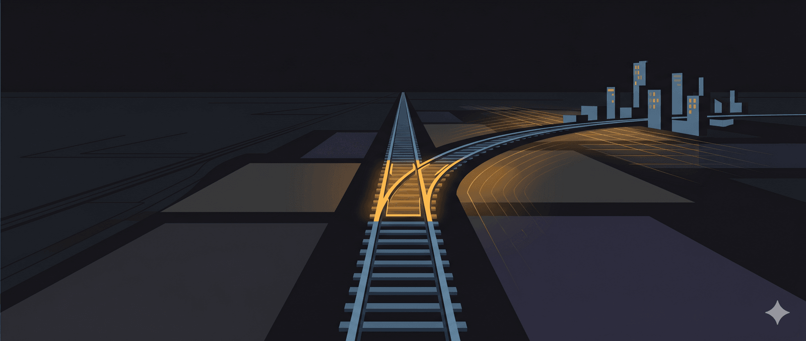

VINSPEED RÚT KHỎI DỰ ÁN ĐƯỜNG SẮT CAO TỐC BẮC NAM LÀ TÍN HIỆU NÊN VUI HAY BUỒN?
Ngày 25 tháng 12 năm 2025, Vingroup gửi công văn xin rút khỏi dự án đường sắt tốc độ cao Bắc Nam. Điều này hơi gây sốc vì mới gần đây:
Tháng 10/2025, họ lập VinMetal với vốn điều lệ ban đầu 10.000 tỷ, sau đó nhanh chóng tăng lên 15.000 tỷ. Nhà máy thép Vũng Áng được công bố với quy mô 461 ha, tổng đầu tư khoảng 80.000 tỷ đồng. Công suất giai đoạn 1 là 5 triệu tấn thép mỗi năm, bao gồm cả thép ray và thép kết cấu cho đường sắt cao tốc.
Ngày 17/12, VinSpeed ký thỏa thuận với Siemens Mobility, gã khổng lồ công nghệ đường sắt của Đức. Siemens sẽ cung cấp đoàn tàu Velaro Novo, hệ thống tín hiệu, và cam kết chuyển giao công nghệ.
Mọi thứ trông như thể Vingroup đang chuẩn bị cho cuộc hành trình dài 1.541 km từ Hà Nội đến TP.HCM. Rồi đúng 8 ngày sau khi ký với Siemens, họ rút lui.
Với 1 đại dự án như thế này tất nhiên có nhiều người quan tâm và mong muốn “giải mã” những điều khó hiểu đằng sau các sự kiện trên. Và để hiểu rõ hơn về dự án này có lẽ nên nhìn lại những bài học lịch sử ngành đường sắt cao tốc của thế giới. Và cần bắt đầu từ một câu chuyện ở hòn đảo cách Việt Nam không xa.
Bài học từ đường sắt cao tốc Đài Loan
Bóng ma Đài Loan
Năm 1997, Taiwan High Speed Rail Corporation, viết tắt là THSRC, giành được quyền xây dựng và vận hành tuyến đường sắt cao tốc dọc bờ biển phía Tây Đài Loan. Đây là dự án hạ tầng lớn nhất lịch sử hòn đảo, với tổng vốn đầu tư 17 tỷ USD. Mô hình được chọn là BOT ( Build-Operate-Transfer ) tức xây dựng, vận hành rồi chuyển giao, với thời hạn nhượng quyền 35 năm.
Trên giấy tờ, mọi thứ hoàn hảo. Tư nhân bỏ vốn, chịu rủi ro, vận hành hiệu quả hơn Nhà nước. Chính phủ không phải lo ngân sách. Sau 35 năm, tài sản quay về tay công. Dự án được quảng bá là một mô hình 3 win, cả 3 bên cùng thắng.
-Tư nhân có động lực xây hạ tầng tốt, vì càng tốt, đất càng tăng giá
-Nhà nước không phải bỏ vốn
-Công chúng có hạ tầng sử dụng
Tuy nhiên thực tế diễn ra khác hẳn với kỳ vọng dự kiến ban đầu, mọi thứ đã không đi theo kế hoạch.
Dự báo ban đầu là 180.000 lượt khách mỗi ngày sau khi khai trương, tăng lên 400.000 lượt vào năm 2036. Con số này sau đó được điều chỉnh xuống 140.000 lượt. Nhưng khi tàu thực sự chạy vào tháng 1 năm 2007, lượng khách thực tế chỉ đạt 50.000 lượt mỗi ngày. Bằng một phần ba dự báo.
Doanh thu thấp hơn kỳ vọng, trong khi chi phí khấu hao và lãi vay cao ngất ngưởng. Đến mùa hè 2009, chỉ hai năm sau khi vận hành, lỗ lũy kế của THSRC đã bằng hai phần ba vốn chủ sở hữu. Công ty đứng trước bờ vực phá sản.
Và đây là lúc câu chuyện trở nên kịch tính
THSRC không thể phá sản theo cách một công ty bình thường phá sản. Đường sắt cao tốc lúc đó đã trở thành xương sống giao thông của Đài Loan. Hàng triệu người phụ thuộc vào nó mỗi ngày. Các hãng hàng không nội địa gần như biến mất vì không cạnh tranh nổi. Nếu tàu ngừng chạy, cả nền kinh tế sẽ tê liệt.
Chính phủ Đài Loan buộc phải can thiệp. Năm 2009, họ bơm 30 tỷ Đài tệ, tương đương gần 1 tỷ USD, để cứu THSRC. Tỷ lệ sở hữu của Nhà nước tăng từ 37% lên 64%. Thời hạn nhượng quyền được kéo dài từ 35 năm lên 70 năm. Mô hình BOT chính thức kết thúc.
Nói cách khác, dự án “tư nhân” cuối cùng trở thành dự án “công” với giá đắt hơn nhiều so với việc Nhà nước tự làm từ đầu.
Nhưng đó chưa phải phần đáng suy ngẫm nhất.
Một phân tích trên trang The Transport Politic đã chỉ ra điều mà hầu hết bình luận bỏ qua. THSRC được cấp quyền phát triển bất động sản xung quanh các nhà ga trong 50 năm, trên đất được cấp miễn phí. Điều này tạo ra động lực để THSRC xây dựng tuyến đường nhanh nhất có thể, dù phải vay với lãi suất cao, vì càng hoàn thành sớm, họ càng được phát triển bất động sản sớm. Đường sắt cao tốc, theo nghĩa này, chỉ là phương tiện để đạt mục đích thực sự. Mục đích đó là đầu cơ đất đai.
Khi đường sắt thua lỗ, Nhà nước phải gánh. Khi bất động sản tăng giá, lợi nhuận thuộc về tư nhân. Bây giờ hãy quay lại Việt Nam và xem Vingroup đang làm gì.
Phân tích hai tuyến đường sắt VinSpeed
Giải phẫu hai tuyến VinSpeed
Vingroup rút khỏi Bắc Nam, nhưng bên cạnh đó họ đang có kế hoạch triển khai 2 tuyến nhỏ hơn. Tuyến Bến Thành đến Cần Giờ dài 54km với tổng vốn 102.430 tỷ đồng, khoảng 4 tỷ USD. Tuyến Hà Nội đến Quảng Ninh dài 120km với tổng vốn 138.930 tỷ đồng, khoảng 5,3 tỷ USD.
Tuyến Bến Thành đến Cần Giờ bắt đầu từ ga Bến Thành, kết nối trực tiếp với Metro số 1 do Nhà nước đầu tư. Điểm cuối nằm trong Khu đô thị Vinhomes Green Paradise, dự án 256.110 tỷ đồng, khoảng 10 tỷ USD, của chính Vingroup. Dự án này có quy mô 2.870 ha, trong đó 1.357 ha là đất lấn biển. Bên trong sẽ có tòa tháp 108 tầng cao 550m, cao nhất Việt Nam và là tòa nhà lấn biển cao nhất thế giới.
Tuyến Hà Nội đến Quảng Ninh bắt đầu từ Trung tâm Hội chợ Triển lãm Quốc gia ở Cổ Loa. Điểm cuối nằm trong Khu công viên rừng Tuần Châu, đối diện Khu đô thị Vinhomes Hạ Long Xanh, dự án 456.600 tỷ đồng, khoảng 18 tỷ USD, của chính Vingroup. Đây là dự án có tổng vốn lớn nhất trong lịch sử tập đoàn.
Một pattern quen thuộc bắt đầu hiện ra. Logic kinh tế hay logic bất động sản?
Theo nghiên cứu quốc tế mà Bộ Giao thông Vận tải trích dẫn, đường sắt tốc độ cao có ưu thế ở cự ly 150 đến 800km. Dưới 150km, ưu thế thuộc về đường bộ. Trên 800km, hàng không chiếm ưu thế.
Với 54km, tuyến Bến Thành đến Cần Giờ nằm hoàn toàn ngoài vùng hiệu quả của đường sắt cao tốc. Trên thế giới, không quốc gia nào xây đường sắt tốc độ 350km/h cho cự ly ngắn như vậy. Đây là phạm vi của metro đô thị với tốc độ 30 đến 80km/h, hoặc đường bộ cao tốc.
Vậy tại sao VinSpeed vẫn đề xuất tốc độ thiết kế 350km/h?
Câu trả lời nằm ở thông điệp marketing, không phải kỹ thuật. Với 54km, chênh lệch thời gian giữa tốc độ 200km/h và 350km/h thì đi hết quãng đường cũng chỉ chênh nhau vài phút. Nhưng con số “350km/h” tạo ra hình ảnh về công nghệ cao, đẳng cấp quốc tế, thu hút người mua bất động sản, narrative hợp lý để neo kỳ vọng cho giá nhà ở mức cao. Khi quảng cáo Vinhomes Green Paradise, cụm từ “kết nối bằng đường sắt cao tốc 350km/h với trung tâm thành phố” có sức nặng hoàn toàn khác so với “kết nối bằng metro”.
Tương tự với tuyến Hà Nội đến Quảng Ninh. Tuyến này dài 120km, nằm ở rìa dưới của vùng hiệu quả đường sắt cao tốc. Nhưng quan trọng hơn, nó sẽ phải cạnh tranh trực tiếp với tuyến đường sắt Lào Cai - Hà Nội - Hải Phòng - Quảng Ninh do Nhà nước đầu tư, tổng chiều dài 460km, tổng vốn hơn 200.000 tỷ đồng, cũng đi đến Hạ Long. Tuyến này đã được Thủ tướng yêu cầu khởi công vào ngày 19 tháng 12 năm 2025, chỉ 6 ngày trước khi Vingroup công bố rút khỏi Bắc Nam.
Nếu nhìn thuần túy về vận tải hành khách, tuyến VinSpeed không có lợi thế cạnh tranh. Tuyến Nhà nước dài hơn, kết nối nhiều điểm hơn, và quan trọng nhất là kết nối trực tiếp với Trung Quốc qua cửa khẩu Lào Cai.
Nhưng tuyến VinSpeed có một thứ mà tuyến Nhà nước không có. Điểm cuối nằm ngay trước cửa dự án bất động sản 18 tỷ USD của Vingroup.
Hãy làm một phép tính đơn giản. Với tuyến Hà Nội đến Quảng Ninh, VinSpeed dự báo khoảng 2 triệu lượt khách mỗi năm vào năm 2028, tăng lên 15 triệu lượt vào năm 2050. Giả sử giá vé trung bình 500.000 đồng, tương đương 20 USD, doanh thu từ bán vé năm 2028 sẽ vào khoảng 40 triệu USD.
Trong khi đó, chi phí vận hành và bảo trì đường sắt cao tốc rất cao. Theo số liệu của Bộ Giao thông Vận tải, chi phí vận hành và bảo trì tuyến Bắc Nam 1.541km ước tính trên 25.000 tỷ đồng mỗi năm, tức khoảng 1 tỷ USD. Tính theo tỷ lệ chiều dài, tuyến Hà Nội đến Quảng Ninh 120km sẽ tốn khoảng 80 đến 100 triệu USD mỗi năm.
Doanh thu 40 triệu, chi phí 80 đến 100 triệu. Lỗ ròng 40 đến 60 triệu USD mỗi năm chỉ riêng tuyến này.
Cho nên nếu lý giải đây là một business giao thông thì sẽ không thể lý giải được tính hợp lý của việc tại sao nó được triển khai. Nhưng bây giờ hãy nhìn sang phía bất động sản.
Vinhomes Hạ Long Xanh có tổng vốn 18 tỷ USD. Nếu việc có đường sắt cao tốc kết nối làm tăng giá trị dự án thêm 10 đến 15%, đó là 1,8 đến 2,7 tỷ USD giá trị tăng thêm. Con số này lớn hơn nhiều so với tổng chi phí xây dựng và vận hành đường sắt trong 30 năm.
Nói cách khác, VinSpeed có thể lỗ hoàn toàn từ vận hành đường sắt mà Vingroup vẫn lãi lớn từ bất động sản.
Đây chính xác là mô hình Đài Loan đã trải qua. Đường sắt lỗ, bất động sản lãi. Và thực tế đáng buồn ở nước họ là khi đường sắt lỗ đến mức không thể tiếp tục, nhà nước buộc phải tiếp quản.
Logic thực sự đằng sau các tuyến đường sắt
Đường sắt như công cụ bán nhà
Đến đây, một câu hỏi quan trọng cần được đặt ra. Nếu đường sắt lỗ, tại sao Vingroup vẫn làm?
Câu trả lời nằm ở thứ tự thời gian của dòng tiền. Và đây là phán đoán của những người có đầu óc kinh doanh.
Vingroup không cần đường sắt có lãi. Họ cần đường sắt tồn tại đủ lâu để bán hết nhà. Khi một khách hàng cân nhắc mua căn hộ 5-10 tỷ đồng ở Cần Giờ, điều họ lo ngại nhất là khoảng cách. Cần Giờ cách trung tâm TP.HCM 50km đường chim bay, nhưng đường bộ phải đi vòng qua phà hoặc cầu Cần Giờ, mất 2 đến 3 giờ vào giờ cao điểm. Không ai muốn sống ở nơi mất nửa ngày để đi làm.
Nhưng nếu có đường sắt cao tốc 350km/h, thời gian di chuyển giảm xuống còn 15 đến 20 phút, câu chuyện nghe có vẻ hợp lý và rất ấn tượng. Đột nhiên, Cần Giờ trở thành lựa chọn hấp dẫn. Biển đẹp, không khí trong lành, môi trường hiện đại, tiện ích cao cấp, không gian sống đẳng cấp, những lời quảng cáo ngọt ngào các dự án bất động sản thường hay thổi vào tai chúng ta. Và quan trọng nhất giá rẻ hơn nội thành, và vẫn có thể đi làm hàng ngày.
Đường sắt, theo nghĩa này, là chi phí marketing, chi phí bán hàng được tính vào giá bán bất động sản.
Hãy làm một phép tính ngược. Dự án Vinhomes Green Paradise có quy mô 2.870 ha với tổng vốn đầu tư 10 tỷ USD. Giả sử biên lợi nhuận gộp của bất động sản cao cấp vào khoảng 30 đến 40%, Vingroup có thể thu về 3 đến 4 tỷ USD lợi nhuận từ dự án này. Mình không ở ngànhh này nên mình không dám nói nhiều hơn nhưng mình nghĩ con số lợi nhuận còn cao hơn thế nhiều. Chi phí xây đường sắt Bến Thành đến Cần Giờ là 4 tỷ USD. Nếu đường sắt giúp bán được nhà với giá cao hơn 20 đến 30% so với không có đường sắt, toàn bộ chi phí xây dựng đã được bù đắp.
Và đây là điểm mấu chốt. Vingroup sẽ có dòng tiền từ việc bán nhà trước khi đường sắt vận hành vì họ làm việc này rất giỏi. Rủi ro vận hành đường sắt đến sau, khi tiền đã vào túi.
Nhưng câu chuyện không dừng ở đó.
Dự án Vinhomes Green Paradise quy hoạch cho 230.000 cư dân. Con số này nghe ấn tượng, nhưng thực tế ở Việt Nam cho thấy một bức tranh khác. Nhiều khu đô thị cao cấp có tỷ lệ lấp đầy rất thấp. Phú Mỹ Hưng sau hơn 20 năm vẫn còn nhiều căn hộ trống. Ciputra, Ecopark, và hàng loạt dự án khác có tỷ lệ người thực sự sinh sống thấp hơn nhiều so với số căn đã bán. Lý do đơn giản là người mua nhà ở phân khúc cao cấp thường mua để đầu tư, không phải để ở.
Nếu Vinhomes Green Paradise cũng theo pattern này, số lượng hành khách thực sự sử dụng đường sắt hàng ngày sẽ thấp hơn nhiều so với dự báo. Ít hành khách đồng nghĩa với doanh thu thấp, và đường sắt càng lỗ nặng hơn.
Nhưng điều đó có lẽ không ảnh hưởng nhiều đến Vingroup so với những người khác vì họ đã bán nhà xong rồi. Người bị ảnh hưởng nhiều sẽ là ai?
Thứ nhất là người mua nhà. Họ mua với kỳ vọng có đường sắt cao tốc, trả giá premium cho kỳ vọng đó. Nếu đường sắt ngừng hoạt động hoặc giảm tần suất vì lỗ, giá trị căn nhà của họ sẽ giảm đáng kể.
Thứ hai là Nhà nước. Đường sắt một khi đã xây thì không thể bỏ hoang. Nếu VinSpeed không thể tiếp tục vận hành, áp lực chính trị từ hàng chục nghìn cư dân sẽ buộc Nhà nước phải can thiệp bằng cách nào đó, hoặc là mua lại, hoặc là trợ giá, hoặc là cho phép tư nhân khác tiếp quản với điều kiện ưu đãi giống như Đài Loan.
Đây chính là cấu trúc rủi ro bất đối xứng mà kinh tế học gọi là “tư nhân hóa lợi nhuận, xã hội hóa rủi ro”. Lợi nhuận từ bán bất động sản thuộc về doanh nghiệp. Rủi ro từ vận hành đường sắt được chuyển sang người mua nhà và Nhà nước.
Trong tư duy hệ thống có một Archetype kinh điển gọi là “Fixes that Fail”, giải pháp phản tác dụng. Pattern này mô tả tình huống một giải pháp ngắn hạn có vẻ hấp dẫn nhưng tạo ra vấn đề dài hạn lớn hơn.
Hãy xem đề xuất của Vingroup cho Bắc Nam trông hấp dẫn như thế nào.
VinSpeed cam kết tự thu xếp 20% vốn, khoảng 12,27 tỷ USD. Họ đề nghị vay Nhà nước 80% còn lại, khoảng 49 tỷ USD, với lãi suất 0% trong 35 năm. Họ hứa khởi công trước cuối năm 2026, hoàn thành năm 2030, nhanh hơn 5 năm so với kế hoạch Nhà nước.
Trên bề mặt, đây là lời đề nghị không thể từ chối. Nhưng hãy đặt vào bối cảnh những gì đã xảy ra ở Đài Loan.
THSRC cũng hứa hẹn tương tự. Tư nhân bỏ vốn, tư nhân chịu rủi ro, Nhà nước chỉ hỗ trợ về mặt pháp lý. Kết quả là sau hai năm vận hành, lỗ lũy kế bằng hai phần ba vốn chủ sở hữu. Nhà nước phải bơm 1 tỷ USD cứu trợ. Tỷ lệ sở hữu Nhà nước tăng từ 37% lên 64%. Mô hình BOT kết thúc.
98% tuyến đường sắt cao tốc trên thế giới lỗ. Chính Vingroup thừa nhận điều này. Chi phí vận hành và bảo trì tuyến Bắc Nam ước tính trên 25.000 tỷ đồng mỗi năm. Thời gian hoàn vốn có thể lên đến 70 năm theo tính toán của chuyên gia. Cứ sau 30 năm lại phải tái đầu tư hàng chục tỷ USD để bảo trì, nâng cấp.
Trong kịch bản xấu, năm thứ 15 hoặc 20, VinSpeed thông báo không thể tiếp tục vận hành vì thua lỗ kéo dài. Đường sắt Bắc Nam lúc đó đã trở thành xương sống giao thông quốc gia. Các hãng hàng không nội địa đã thu hẹp hoặc biến mất như ở Đài Loan. Hàng triệu người phụ thuộc vào nó mỗi ngày.
Nếu tình hình Việt Nam giống như Đài Loan thì nhà nước có thể sẽ không có lựa chọn nào khác ngoài tiếp quản.
Khoản vay 49 tỷ USD lãi suất 0% lúc đó có thể biến thành khoản chi không hoàn lại. Cộng thêm chi phí tiếp quản, chi phí tái đầu tư, chi phí bù lỗ vận hành. Pattern giống Đài Loan, nhưng quy mô lớn hơn nhiều lần.
Vì thế Vingroup rút khỏi Bắc Nam có thể là điều may mắn cho Việt Nam.
Thứ nhất, nó ngăn chặn tiền lệ Đài Loan tái diễn ở quy mô lớn hơn. Với tuyến Bắc Nam 67 tỷ USD đi qua 20 tỉnh thành, hậu quả nếu xảy ra kịch bản tương tự sẽ lớn hơn Đài Loan nhiều lần. Đài Loan chỉ có 23 triệu dân và tuyến đường sắt dài 350km. Việt Nam có 100 triệu dân và tuyến dài 1.541km.
Thứ hai, nó cho thấy dự án này chưa hẳn là quyết tâm lớn nhất của họ nhưng đa số từng nghĩ. Việc Vingroup giữ lại hai tuyến nhỏ mà cả hai đều kết thúc tại dự án bất động sản của chính họ cho thấy đường sắt có thể không phải mục đích mà là phương tiện. Mục đích thực sự là tăng giá trị đất đai.
Thứ ba, nó buộc Nhà nước phải xây dựng năng lực thay vì phụ thuộc vào tư nhân. Dù còn các doanh nghiệp khác xin tham gia nhưng nhà nước bắt đầu nhìn thấy những tín hiệu rủi ro và buộc phải đầu tư nghiêm túc vào đào tạo nhân lực, phát triển công nghệ, hoàn thiện khung pháp lý nếu quyết tâm muốn làm. Đây là những việc khó và chậm, nhưng là giải pháp căn bản.
Thứ tư, nó tạo cơ hội thiết kế lại mô hình với bài học từ hai tuyến nhỏ. Thay vì cam kết vào dự án 67 tỷ USD ngay lập tức, bây giờ có thể quan sát VinSpeed vận hành hai tuyến Cần Giờ và Quảng Ninh. Nếu họ vận hành tốt, có lãi, phục vụ công chúng, đó sẽ là bằng chứng cho mô hình. Nếu họ lỗ và cần Nhà nước can thiệp, đó sẽ là bài học với chi phí thấp hơn nhiều so với Bắc Nam.
Thứ năm, đối với Vingroup họ cũng đã biết tự lượng sức mình, thận trọng không quá phiêu lưu mạo hiểm, điều đó tránh rủi ro cho họ và tránh được rủi ro cho đất nước.
Những câu hỏi chính sách còn bỏ ngỏ
Câu hỏi về hai tuyến còn lại
Hai tuyến VinSpeed vẫn còn đó và vẫn đặt ra những câu hỏi lớn về chính sách.
Hiện tại, Vingroup đang được hưởng ưu đãi như hạ tầng công. Nhà nước hỗ trợ giải phóng mặt bằng. Tuyến Bến Thành đến Cần Giờ kết nối trực tiếp với Metro số 1 do Nhà nước đầu tư hàng tỷ USD. VinSpeed được gọi là “doanh nghiệp tiên phong đóng góp cho hạ tầng quốc gia” trên truyền thông.
Nhưng chúng ta không chắc về việc Vingroup có chịu nghĩa vụ như hạ tầng công hay không. Cho đến nay không thấy các thông tin về quy định rõ ràng về giá vé, tiêu chuẩn dịch vụ tối thiểu bắt buộc, không có cơ chế tiếp quản nếu thua lỗ hay quy định về chia sẻ lợi nhuận từ đất tăng giá.
Đây là sự bất đối xứng cần được giải quyết.
Nếu hai tuyến này thực sự là hạ tầng công cộng, cần có khung pháp lý tương ứng. Giá vé phải được kiểm soát để người dân bình thường có thể sử dụng. Chất lượng dịch vụ phải đạt tiêu chuẩn tối thiểu. Nếu doanh nghiệp thua lỗ và muốn ngừng vận hành, phải có cơ chế chuyển giao rõ ràng. Giá trị đất tăng thêm nhờ có đường sắt phải được chia sẻ với công quỹ thông qua thuế hoặc phí.
Nếu hai tuyến này là hạ tầng tư nhân phục vụ dự án bất động sản tư nhân, thì không nên được hưởng ưu đãi như hạ tầng công. Không hỗ trợ giải phóng mặt bằng từ ngân sách. Nếu tuyến này kết nối miễn phí với Metro số 1 thì mới gọi là “đóng góp quốc gia” còn không thì nó sẽ giống như “đường sắt nội bộ khu đô thị Vingroup”.
Bài học từ tư duy hệ thống và điểm tới hạn
Nhìn từ khoa học phức hợp
Trong khoa học phức hợp có khái niệm về “điểm tới hạn”, ngưỡng mà khi vượt qua, hệ thống chuyển đổi sang trạng thái khác không thể đảo ngược. Giống như ly nước nghiêng dần, đến một góc nhất định thì đổ ào, không nghiêng từ từ nữa.
Nếu Vingroup làm Bắc Nam theo đề xuất ban đầu và thất bại như THSRC, đó sẽ là một điểm tới hạn cho hạ tầng giao thông Việt Nam. Một khi Nhà nước đã tiếp quản tài sản lỗ hàng chục tỷ USD, rất khó để quay lại. Niềm tin vào mô hình PPP sẽ sụp đổ. Nguồn lực bị hút vào việc duy trì tài sản lỗ thay vì đầu tư phát triển mới. Bài học Đài Loan cho thấy hậu quả kéo dài hàng thập kỷ.
Cũng trong khoa học phức hợp có khái niệm “resilience”, khả năng phục hồi. Một hệ thống resilient không phải hệ thống không bao giờ gặp sốc, mà là hệ thống có thể hấp thu sốc và phục hồi hoặc thích nghi.
Việc Vingroup rút lui là một cú sốc nhỏ. Cổ phiếu giảm vài phiên rồi sẽ hồi. Dư luận xôn xao vài tuần rồi sẽ quên. Nhưng cú sốc nhỏ này giúp hệ thống tránh được cú sốc lớn hơn nhiều trong tương lai.
Cái giá của mọi kỳ tích phát triển
Kết: Thái cực đồ của phát triển
Khoa học phức hợp, xét cho cùng, cũng giống với tư duy âm dương của phương Đông. Không nhìn mọi thứ bằng con mắt đơn giản trắng đen mà thấy sự đa dạng phức tạp. Trong cái lợi có cái hại, trong cái hại có cái lợi. Giống như thái cực đồ, trong âm có dương và trong dương có âm.
Thế nên trong những cái nguy cơ thách thức kể trên câu hỏi đặt ra là “Có nên làm đường sắt cao tốc hay không?”
Nhìn vào bức tranh kinh tế Việt Nam hiện tại, một nghịch lý hiện ra. GDP tăng trưởng 7,09% năm 2024, thuộc hàng cao nhất khu vực. Nhưng 71,7% kim ngạch xuất khẩu đến từ khối FDI. Samsung, Intel, Foxconn và hàng loạt tập đoàn nước ngoài đóng góp phần lớn giá trị. Người Việt không làm những công việc đòi hỏi thâm dụng công nghệ cao, nhiều chất xám chủ yếu làm những công đoạn thâm dụng lao động level thấp ở đáy chuỗi giá trị. Công nghệ lõi, bản quyền, thương hiệu, tất cả đều nằm trong tay người nước ngoài.
Nếu tình trạng này kéo dài mãi, Việt Nam sẽ mãi ở vị trí gia công. Không có nền công nghiệp tự chủ. Không có năng lực R&D. Không có cơ hội tạo ra những sản phẩm mang thương hiệu Việt Nam cạnh tranh trên thị trường thế giới.
Từ trước đến giờ quả thật ở Việt Nam có Vingroup là đại diện tiêu biểu nhất trong việc dám làm những điều mới và chấp nhận rủi ro. Nổi bật nhất là việc quyết tâm nhảy vào ngành công nghiệp ô tô điện, đầu tư xây dựng Vinfast, có thể nói họ đã đặt nền móng cho việc xây dựng ngành công nghiệp ô tô của Việt Nam, những điều Vinfast đã làm được cho đến hôm nay theo quan điểm của mình cũng là kỳ tích.
Mình vẫn ủng hộ đi xe XanhSM từ hồi đầu mới ra, hồi sang Philipine đúng lúc XanhSM mới khai trương thấy mừng rớt nước mắt, ngồi hẳn tiếng đồng hồ chờ để book được xe Xanh thay vì cố lên Grab. Nên mình cũng luôn kỳ vọng Việt Nam có nhiều doanh nghiệp có thể phá núi, mở đường như Vingroup vì những gì Vinfast đã làm được chính là những tia sáng le lói ở cuối đường hầm, bằng chứng về một giấc mơ người Việt có thể vươn đến những tầm cao hơn. Mình có nhiều bạn bè người quen làm ở Vingroup và Vinfast nên biết họ làm việc với cường độ khủng khiếp thế nào nên cũng rất khâm phục họ.
Đường sắt cao tốc, dù rủi ro, có thể là cái cớ, một cú hích để bước ra khỏi vùng an toàn đó.
Ngày xưa mình khá hâm mộ nước Nhật nên có xem Series truyền hình Project X của đài NHK, phát sóng từ năm 2000 đến 2005, kể lại những dự án động trời mà người Nhật đã hoàn thành. Một trong những tập nổi tiếng nhất nói về Shinkansen, tàu cao tốc đầu tiên trên thế giới. Năm 1959 khi dự án khởi động, hầu hết chuyên gia phương Tây cho rằng đó là ý tưởng điên rồ. Nhật Bản vừa thua trận, kinh tế kiệt quệ, làm sao có thể xây đường sắt tốc độ cao hơn bất kỳ nước nào? Dù là phim tài liệu nhưng trong phim có rất nhiều cảnh khóc, và lúc đó mình cũng khóc khi xem những cảnh đó vì thấy khâm phục nghị lực và ý chí của người Nhật, và cũng mơ ước một ngày nào đó người Việt Nam có thể làm được điều người Nhật đã làm.
Nhưng những kỹ sư từng thiết kế máy bay chiến đấu Zero trong Thế chiến II đã chuyển sang thiết kế đầu tàu. Họ áp dụng nguyên lý khí động học hàng không vào đường sắt. Họ làm việc ngày đêm, hy sinh sức khỏe, gia đình, đời tư. Và họ thành công. Shinkansen khai trương đúng ngày khai mạc Olympic Tokyo 1964, trở thành biểu tượng của nước Nhật hồi sinh từ đống tro tàn.
Sau này mình lại chuyển sang hâm mộ Trung Quốc cũng với lý do tương tự khi thấy họ có làm những điều cảm giác như không tưởng. Trung Quốc cũng đang viết những câu chuyện tương tự Nhật Bản nhưng với quy mô lớn hơn. Từ năm 2008 đến 2019, họ xây trung bình 5.464 km đường sắt mỗi năm, gần bằng khoảng cách từ New York đến London. Cầu vượt biển Hồng Kông - Chu Hải - Ma Cao dài 55 km, bao gồm đường hầm ngầm 6,7 km dưới đáy biển sâu 40 mét, giành 454 bằng sáng chế và đoạt giải công trình xuất sắc của Hiệp hội Cầu và Kết cấu Quốc tế năm 2020. Cầu đường sắt cao tốc vượt eo biển Bình Đàm dài 16,3 km, xây ở vùng biển mà sóng mạnh gấp 10 lần sông Dương Tử, nơi từng được gọi là “vùng cấm xây cầu”.
Nếu Mỹ có American Dream thì Trung Quốc có “Trung Hoa Mộng”, giấc mơ phục hưng dân tộc anh hùng với 5000 năm lịch sử hướng tới mục tiêu vượt qua Mỹ trở thành siêu cường số một. Toàn Trung quốc vươn lên với bá khí của một cường quốc đang trỗi dậy mà họ gọi là quật khởi hòa bình đã biến nhiều thứ tưởng chừng không thể nào có kết quả mà cuối cùng nó đã thành hiện thực.
Nhưng cũng cần nhìn thấy mặt kia của đồng xu, kỳ tích cũng để lại nhiều tổn thương hệ thống.
Nhật Bản trả giá bằng thế hệ “Karoshi”, chết vì làm việc quá sức. Họ trả giá bằng xã hội già hóa vì không ai còn thời gian sinh con. ,bằng ba thập kỷ kinh tế trì trệ sau bong bóng vỡ.
Trung Quốc trả giá bằng núi nợ khổng lồ. Riêng hệ thống đường sắt cao tốc đang gánh khoản nợ hơn 900 tỷ USD. Nhiều tuyến không bao giờ có lãi. Thành phố ma mọc lên khắp nơi. Môi trường bị tàn phá. Và theo nghiên cứu của Viện Lowy, trong 24 dự án hạ tầng lớn của Trung Quốc tại Đông Nam Á trị giá 77 tỷ USD, có hơn 52 tỷ USD chưa được thực hiện, tỷ lệ hoàn thành trung bình chỉ 33%.
Hàn Quốc, một kỳ tích kinh tế khác, cũng trả giá bằng tỷ lệ tự tử cao nhất trong các nước phát triển. Cái giá của việc cố gắng quá sức là áp lực thi cử nghiền nát tuổi thơ nhiều thế hệ và văn hóa làm việc đến kiệt sức không thua gì Nhật.
Mỗi kỳ tích đều có cái giá của nó. Trong phúc có họa.
Bây giờ nhìn về Việt Nam có chúng ta vẫn phải nghĩ theo cả 2 hướng cả phúc lẫn họa. Nhưng phúc hay họa thì sẽ lại do bản thân chúng ta, những người Việt Nam hôm nay.
Theo xu thế thì đường sắt Bắc Nam chắc rồi sẽ vẫn được xây. Có thể chậm hơn. Có thể bằng vốn Nhà nước. Có thể với sự tham gia của các doanh nghiệp tư nhân khác theo mô hình này hoặc mô hình khác, cân bằng hơn, minh bạch hơn, với khung pháp lý rõ ràng hơn. Nhưng nó sẽ được xây trên nền tảng vững chắc hơn, không nên dẫm lên vết xe đổ của Đài Loan.
Khuyến nghị chính sách cho VinSpeed
Hướng đi nào cho VinSpeed?
Nếu Vingroup và Nhà nước thực sự muốn biến hai tuyến đường sắt thành bệ phóng cho ngành công nghiệp đường sắt Việt Nam, thay vì chỉ là công cụ bán bất động sản, có những điều có thể làm.
Thứ nhất, minh bạch hóa cấu trúc tài chính. Tách bạch hoàn toàn hạch toán giữa VinSpeed và Vinhomes. Công bố công khai doanh thu, chi phí, lãi lỗ của mảng đường sắt. Để công chúng và cơ quan quản lý có thể giám sát, thay vì để lỗ đường sắt “biến mất” vào chi phí chung của tập đoàn.
Thứ hai, cam kết chuyển giao công nghệ thực chất. Hợp đồng với Siemens đã ký, nhưng chuyển giao công nghệ có nhiều cấp độ. Cấp thấp nhất là mua thiết bị về lắp ráp. Cấp cao hơn là học cách vận hành và bảo trì. Cấp cao nhất là làm chủ thiết kế và sản xuất. Cần có lộ trình rõ ràng để tiến lên các cấp độ cao hơn, với cam kết về tỷ lệ nội địa hóa tăng dần theo thời gian.
Thứ ba, xây dựng hệ sinh thái đào tạo. Đường sắt cao tốc cần đội ngũ kỹ sư, kỹ thuật viên chất lượng cao. Thay vì chỉ thuê chuyên gia nước ngoài, có thể hợp tác với các trường đại học để đào tạo nhân lực. Gửi người đi học tại Đức, Nhật, Trung Quốc. Xây dựng trung tâm nghiên cứu và phát triển ngay tại Việt Nam.
Thứ tư, chia sẻ giá trị với cộng đồng. Nếu đường sắt làm tăng giá trị bất động sản, một phần giá trị đó nên quay lại phục vụ cộng đồng. Có thể thông qua quỹ phát triển hạ tầng địa phương, trợ giá vé cho người thu nhập thấp, hoặc đầu tư vào tiện ích công cộng xung quanh các nhà ga.
Thứ năm, thiết lập cơ chế giám sát độc lập. Một ủy ban gồm đại diện Nhà nước, chuyên gia độc lập, và đại diện cộng đồng để giám sát chất lượng dịch vụ, an toàn vận hành, và việc thực hiện các cam kết. Báo cáo công khai định kỳ.
Nếu làm được những điều này, hai tuyến VinSpeed có thể trở thành mô hình mẫu cho hợp tác công tư trong hạ tầng. Vingroup vẫn có lợi nhuận từ bất động sản, nhưng cũng đóng góp thực sự vào năng lực công nghệ quốc gia. Nhà nước có thêm hạ tầng mà không phải gánh toàn bộ rủi ro. Người dân được hưởng dịch vụ tốt với giá hợp lý. Win-win-win.
Nhưng điều đó đòi hỏi một thứ không thể mua bằng tiền.
Câu hỏi đặt ra cho Việt Nam là liệu có đủ những con người cần thiết để biến khát vọng thành hiện thực mà không phải trả giá quá đắt.
Nếu quả thực trong Vingroup và cả phía Nhà nước có những người thực sự khát khao một Việt Nam hùng cường. Những người thực tâm muốn cống hiến, phụng sự lợi ích quốc gia chứ không chỉ lợi ích cá nhân hay tập đoàn. Những người yêu nước không phải bằng lời nói mà bằng hành động, bằng sự hy sinh, bằng việc đặt cái chung lên trên cái riêng.
Nếu có những người như vậy, và đủ nhiều, đường sắt cao tốc có thể trở thành bệ phóng cho một Việt Nam khác. Một Việt Nam làm chủ công nghệ thay vì gia công. Một Việt Nam xuất khẩu kỹ sư và giải pháp thay vì xuất khẩu lao động. Một Việt Nam mà thế hệ sau có quyền tự hào.
Nhưng nếu không có những người như vậy, hoặc có nhưng không đủ, dự án sẽ chỉ là một cách tinh vi hơn để chuyển tiền từ túi người dân vào túi một nhóm nhỏ.
Đây là điều mà không có phân tích hệ thống nào có thể dự đoán được. Vì nó phụ thuộc vào một biến số không thể đo lường.
Lòng người.
Ranh giới giữa liều lĩnh và dũng cảm, giữa tham vọng và hoang tưởng, giữa khát vọng và ảo vọng, đôi khi chỉ được phân định bởi kết quả cuối cùng. Và kết quả đó phụ thuộc vào những con người cụ thể đang cầm lái con tàu này.
Đôi khi, điều tốt nhất một hệ thống có thể làm là không làm gì vội vàng. Nhưng cũng có những lúc, một dân tộc cần đủ dũng khí để bước vào không gian mới, chấp nhận rủi ro, chấp nhận thất bại, để có cơ hội chạm vào những đỉnh cao mà chưa bao giờ dám mơ.
Dự án đường sắt Bến Thành-Cần Giờ có lẽ sẽ là dự án thí nghiệm, dự án pilot để trả lời cho những câu hỏi trên.
P/S: Bài viết phân tích từ góc độ tư duy hệ thống và khoa học phức hợp, không nhằm đánh giá đạo đức hay động cơ của bất kỳ cá nhân hay tổ chức nào. Các số liệu được trích từ nguồn công khai tại thời điểm viết bài.
Các bài trong series về đường sắt cao tốc
Đường sắt cao tốc Việt Nam: https://shorturl.at/SMoXz
Đường sắt cao tốc châu Âu: https://shorturl.at/9ljQj
Đường sắt cao tốc Nhật Bản https://shorturl.at/55uGl
Đường sắt cao tốc Trung Quốc https://shorturl.at/vo7gX
🔍 Phân tích bài viết
📌 Tóm tắt ý chính
VinSpeed rút khỏi dự án đường sắt cao tốc Bắc Nam (67 tỷ USD) chỉ 8 ngày sau khi ký với Siemens — không phải thất bại mà là tín hiệu tích cực. Bài viết lý giải rằng hai tuyến VinSpeed còn lại (Bến Thành–Cần Giờ và Hà Nội–Quảng Ninh) đều kết thúc trước cửa dự án bất động sản tỷ đô của chính Vingroup, tức đường sắt là công cụ tăng giá đất chứ không phải hạ tầng giao thông thuần túy. Bài học Đài Loan (THSRC) cho thấy mô hình BOT đường sắt cao tốc gần như tất yếu lỗ, và nhà nước sẽ phải tiếp quản — đó là cấu trúc “tư nhân hoá lợi nhuận, xã hội hoá rủi ro”. Việc rút Bắc Nam tránh được kịch bản đó ở quy mô khổng lồ hơn. Tác giả kết lại bằng câu hỏi mở về “lòng người” — liệu những người cầm lái có đủ chí công để biến khát vọng thành thực hay không.
🗺️ Mindmap
💡 Insight & Góc nhìn đa chiều
Đường sắt như một công cụ định giá tài sản: Trong kinh tế học hạ tầng, giá trị của một tuyến đường không chỉ nằm ở doanh thu vé mà ở “value capture” — phần giá trị đất đai tăng thêm dọc hành lang. Vingroup có vẻ hiểu điều này sâu hơn cả nhà nước. Vấn đề là họ đang capture 100% phần tăng giá đó mà không chia sẻ lại cho cộng đồng hoặc ngân sách.
Ai được lợi: Vingroup (bán BĐS giá cao hơn), người mua BĐS trong giai đoạn đầu (nếu bán lại kịp), các nhà thầu xây dựng và cung cấp thiết bị (Siemens đã ký hợp đồng).
Ai bị thiệt: Người mua BĐS muộn (trả giá premium cho một kỳ vọng có thể không thành), người dân đóng thuế (nếu nhà nước sau này phải tiếp quản tuyến lỗ), các dự án BĐS cạnh tranh trong khu vực không được kết nối hạ tầng.
Điều ẩn sau bề mặt: Việc VinSpeed đề xuất vay 49 tỷ USD lãi suất 0% trong 35 năm từ ngân sách nhà nước thực chất là một khoản trợ cấp khổng lồ ẩn dưới dạng “vay ưu đãi”. Ngay cả khi VinSpeed hoàn trả đủ gốc sau 35 năm, lãi suất 0% trong bối cảnh lạm phát bình quân 4-5%/năm đồng nghĩa nhà nước mất đi khoảng 30-40% giá trị thực của khoản tiền đó.
Xu hướng đang hình thành: Các tập đoàn tư nhân lớn ở Đông Nam Á đang dùng hạ tầng như đòn bẩy phát triển BĐS — mô hình này từng thành công ở Singapore (MTR model), nhưng điều kiện tiên quyết là khung pháp lý chặt và mật độ dân số đủ cao để tuyến có lãi từ vé.
⚖️ Phản biện
1. Bài viết có thể quá bi quan về khả năng lãi của hai tuyến nhỏ. Tuyến Bến Thành–Cần Giờ 54km so sánh không hoàn toàn hợp lý với đường sắt cao tốc liên thành phố dài hàng trăm km. Nếu thiết kế lại ở tốc độ 160-200km/h (thay vì 350km/h) và vận hành như commuter rail, chi phí xây dựng và vận hành sẽ thấp hơn nhiều, hòa vốn có thể đạt được. Bài viết dùng số liệu chi phí vận hành của tuyến Bắc Nam 1.541km để extrapolate — đây là sai số phương pháp luận đáng kể.
2. THSRC không phải thất bại hoàn toàn. Sau khi nhà nước tiếp quản và cơ cấu lại nợ năm 2009, THSRC bắt đầu có lãi từ năm 2012 và liên tục có lãi từ đó đến nay. Đài Loan hiện có 1 trong 3 tuyến đường sắt cao tốc có lãi nhất châu Á. “Bài học Đài Loan” thực ra phức tạp hơn bài viết mô tả — nó cho thấy rằng nhà nước tiếp quản tuyến lỗ không nhất thiết là thảm kịch nếu tuyến đó có giá trị kinh tế thực sự.
3. Phân tích thiếu so sánh với chi phí thay thế. Nếu không xây đường sắt, Cần Giờ sẽ cần cầu/hầm vượt biển, ước tính 15.000–25.000 tỷ đồng. Chi phí tắc nghẽn giao thông và ô nhiễm trong 20–30 năm tới cũng là chi phí thực mà bài không đề cập. So sánh chi phí/lợi ích cần tính cả những externalities này.
4. Động cơ của Vingroup có thể đa chiều hơn. Không loại trừ có những lãnh đạo trong Vingroup thực sự tin vào tiềm năng công nghiệp đường sắt. VinMetal, Vinfast đều là những cược dài hạn vào năng lực sản xuất trong nước — không phải tất cả đều là tính toán thuần BĐS ngắn hạn.
❓ Câu hỏi mở
Liệu có mô hình hợp tác công-tư nào cho phép tư nhân capture giá trị đất đai nhưng chia sẻ đủ với công quỹ, đồng thời vẫn tạo động lực đầu tư hạ tầng? MTR của Hong Kong thường được dẫn chứng, nhưng điều kiện mật độ và quản trị của HK rất khó replicate ở VN.
Sau khi Vingroup rút Bắc Nam, ai sẽ là nhà thầu tư nhân thực sự? Các tập đoàn khác (T&T, Sungroup…) đã có tín hiệu muốn tham gia — họ sẽ đề xuất mô hình gì? Liệu nhà nước có đủ năng lực đàm phán để tránh lặp lại cấu trúc rủi ro tương tự?
Tuyến Bến Thành–Cần Giờ sẽ vận hành như thế nào khi tỷ lệ lấp đầy Vinhomes Green Paradise thấp? Nếu sau 10 năm chỉ có 30-40% cư dân thực sự sinh sống (pattern phổ biến ở BĐS cao cấp VN), lưu lượng hành khách thực tế sẽ ra sao và ai chịu áp lực tài chính?
🇻🇳 Liên hệ Việt Nam
Chuỗi cung ứng và sản xuất: VinMetal (thép ray, thép kết cấu) và hợp đồng Siemens có tiềm năng tạo ra cluster công nghiệp đường sắt trong nước. Nếu được thực hiện nghiêm túc, đây là cơ hội để ngành thép-cơ khí VN leo lên chuỗi giá trị cao hơn — từ thép xây dựng thông thường sang thép đường ray có tiêu chuẩn kỹ thuật cao. Nhưng nếu chỉ là lắp ráp thiết bị nhập khẩu với tỷ lệ nội địa hoá thấp thì cơ hội này bị bỏ lỡ.
Thị trường lao động: Đường sắt cao tốc đòi hỏi kỹ sư hệ thống điều khiển, tín hiệu, bảo trì cơ điện tử — những nghề hiện VN còn thiếu trầm trọng. Đây là áp lực tốt lên hệ thống đào tạo nếu nhà nước và tư nhân thực sự đầu tư vào nhân lực chứ không chỉ nhập khẩu chuyên gia nước ngoài.
Vĩ mô tổng thể: 71,7% xuất khẩu từ FDI phản ánh VN đang ở đáy chuỗi giá trị. Đường sắt cao tốc — nếu được dùng như bệ phóng công nghệ thực sự chứ không phải chỉ là hạ tầng tiêu dùng — là một trong ít ngành có thể tạo ra lực kéo systemic để thoát bẫy đó. Nhưng điều kiện tiên quyết là nhà nước phải đàm phán chuyển giao công nghệ thực chất, không phải chỉ mua thiết bị.
Rủi ro tài khóa: Nợ công VN khoảng 37% GDP (2024), còn dư địa, nhưng một khoản cam kết 49 tỷ USD (tương đương ~50% GDP hiện tại) nếu không thu hồi được sẽ là cú đòn nghiêm trọng. Kinh nghiệm Đài Loan cho thấy không phải khoản tiếp quản nào cũng xấu — nhưng cần khung pháp lý rõ ràng trước, không phải sau khi xảy ra sự cố.
📖 Giải thích thuật ngữ
BOT (Build-Operate-Transfer): Mô hình tư nhân bỏ tiền xây, được vận hành một thời gian để thu hồi vốn, rồi bàn giao lại cho nhà nước. Ví dụ dễ hiểu: như thuê mặt bằng 20 năm, mở quán phở, sau 20 năm trả lại nhà cho chủ đất.
Tư nhân hoá lợi nhuận, xã hội hoá rủi ro (Privatize gains, socialize losses): Khi lời thì cổ đông tư nhân hưởng, khi lỗ lớn đến mức “too big to fail” thì nhà nước (tức người dân đóng thuế) phải gánh. Ví dụ: ngân hàng lớn sụp đổ năm 2008 ở Mỹ được chính phủ bailout bằng tiền thuế.
Value capture: Cơ chế nhà đầu tư hạ tầng thu lại phần giá trị đất đai tăng thêm do chính hạ tầng đó tạo ra. Ví dụ: bạn xây cầu, đất hai đầu cầu tăng giá — bạn thu phí qua cầu hoặc trực tiếp sở hữu đất đó.
PPP (Public-Private Partnership): Hợp tác công tư — nhà nước và tư nhân cùng góp vốn/rủi ro để xây hạ tầng, phân chia lợi ích và trách nhiệm theo hợp đồng. Khác với BOT ở chỗ nhà nước tham gia ngay từ đầu, không chỉ tiếp quản khi có sự cố.
Archetype “Fixes that Fail”: Trong tư duy hệ thống, đây là mẫu giải pháp ngắn hạn có vẻ hấp dẫn nhưng tạo ra vấn đề lớn hơn về sau. Ví dụ: uống thuốc giảm đau thay vì chữa bệnh gốc — triệu chứng hết nhanh, nhưng bệnh nặng thêm theo thời gian.
Điểm tới hạn (Tipping point/Critical threshold): Ngưỡng mà khi hệ thống vượt qua sẽ chuyển sang trạng thái mới không thể đảo ngược. Ví dụ: ly nước nghiêng thêm 1 độ cuối cùng thì đổ — quá trình nghiêng từ từ, nhưng đổ thì chỉ 1 lần.